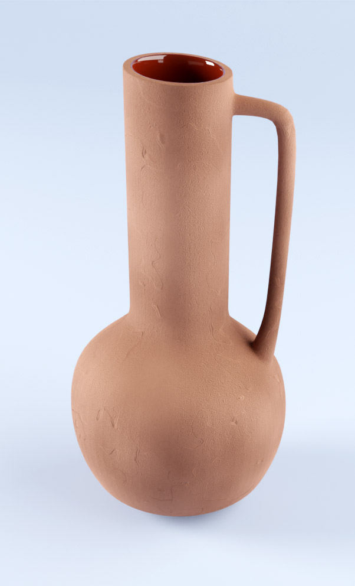
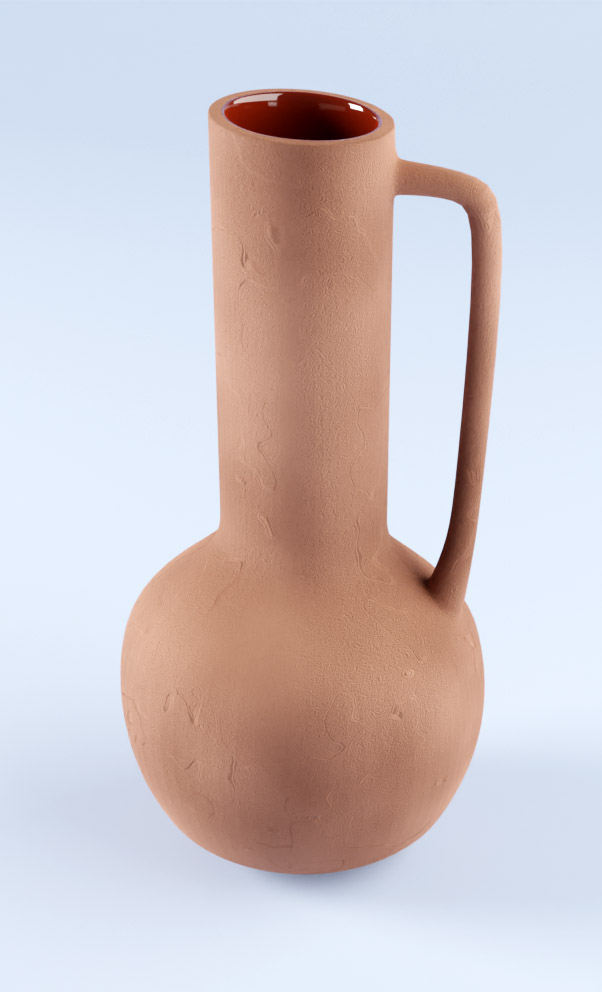

Ich habe an einer Weiterbildung beim Future Training and Consulting GmbH, Berlin teilgenommen. Das sind Beispiele meiner Arbeit.
Als Ingeneurin liebe ich die Weil der Technik - von Spielzeug bis zur modernen technischen Produkten
Gelicopter BELL 429
Drohne mit Kamera
Die Modelle der Taschen wurden für die Kollaboration mit dem Unternehmen Grodex entworfen


In Version 2.92 führte Blender einen knotenbasierten Arbeitsablauf zum Konstruieren und
Manipulieren von Geometrie ein, daher der Name „Geometrieknoten“ - Geometry Node. Es handelt
sich dabei um einen rein
prozeduralen Workflow.
Angefertigt ausschließlich nur mit Nutzung von Geometry Node Editor
 

Angefertigt ausschließlich nur mit Nutzung von Modifier. Beispiele für die Verwendung von Shader Editor und mehreren proceduralen Texturen
Beispiel der Nutzung von Procedural Gold Material. Als Textur verwende ich ein Foto meines Gemäldes